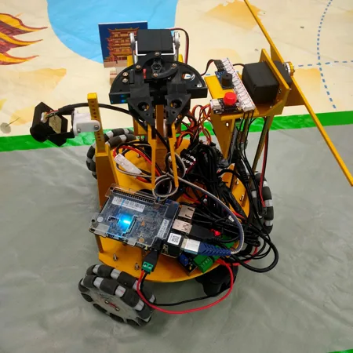
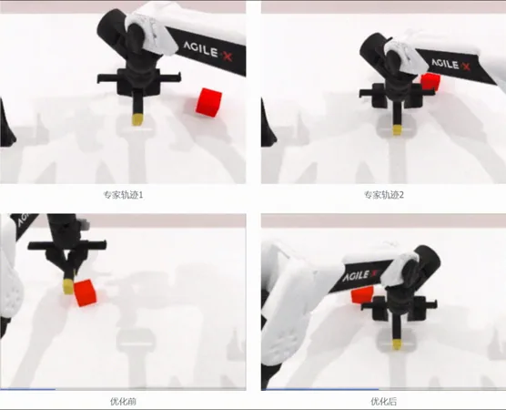

Institute of Computing Technology, CAS
Master’s student · Advisor: Yunji Chen
Sep 2026 – present
MSc student · Institute of Computing Technology, Chinese Academy of Sciences
I work on robot manipulation, from training vision–language–action policies to testing them on real arms. Before graduate school I developed production firmware at Xiaomi. I also implemented on-device vision and telemetry for a competition vehicle.

Master’s student · Advisor: Yunji Chen
Sep 2026 – present
Bachelor’s degree in Computer Science and Technology
Sep 2020 – Jun 2024
Home Appliances Software Platform · Wuhan

NeurIPS competition · Aug – Nov 2026
I built the PiPER deployment and evaluation system for all ten tasks, synchronizing three RGB views, 14-dimensional robot state and CAN commands. I generated 1,000 simulation demonstrations for table rearrangement and tuned how many actions the arms executed before replanning.
Our team fine-tuned π0.5 on a 77:23 mix of simulated and real demonstrations, with a second real-data stage on selected tasks. We placed 3rd of 47 teams in the simulation preliminaries. The pipette task I led ranked first by overall score.

Baidu Creative Track · May – Aug 2023
National second prize. I deployed YOLOv3-MobileNetV3 on the car and used knowledge distillation and pruning to raise inference from 3 to 30 FPS. I implemented DMA-based UART reception, idle-line detection and CRC checking, and built Vue and Flask telemetry for Wi-Fi video and live PID tuning.

Independent project · 2026
I generated about 500 randomized expert trajectories, converted them to RLDS and fine-tuned the policy on four RTX 4090 GPUs with LoRA and FSDP. I fixed a 25-step action window that discarded the final 24 observation starts of each long episode.

Undergraduate thesis
I built a Django and Neo4j system for exploring industry-chain relationships, with Python data processing and an interactive Vue frontend.

Undergraduate innovation project
As electrical control lead, I designed an ESP32 main board integrating motor drivers and Wi-Fi for remotely steering the prototype beneath floating slabs.
I adapted the Franka baseline for gear insertion. I converted 19 demonstrations into 3,740 replay transitions, checked offline learner loading and validated the visual reward on hardware using gripper state and a three-frame check.